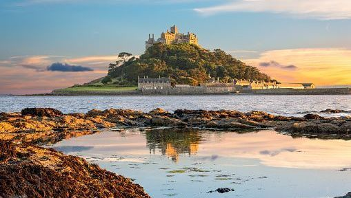

#1: Cornwall, UK
My family used to live in England when I was younger. One day, my family took a day to drive down to Corwall and flew kites on the coast. I would love to experience that again and relive those good memories.
 PLACES I WANT TO VISIT
PLACES I WANT TO VISIT
My family used to live in England when I was younger. One day, my family took a day to drive down to Corwall and flew kites on the coast. I would love to experience that again and relive those good memories.
I have seen so many pictures of the beautiful landscape, and seeing the Northern Lights is on my bucket list. Norway also has some of the happiest people in the world.

I have traveled to Paris before, but I was very young. My parents said it was their favorite place they took us because of how much there was to see and experience.
My Grandma and my Dad have both visited Alaska and mentioned that it was unlike any other place in the world. The views are just breathtaking, and not many people take advantage of how close it is.
My sister and her husband visited New Zealand just this last month, and they sent some incredible pictures to us. It is so green, so alive, and so full of possibilities.